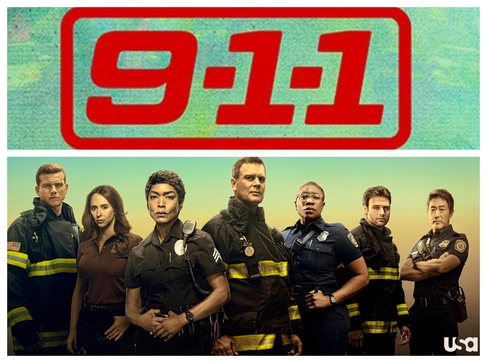
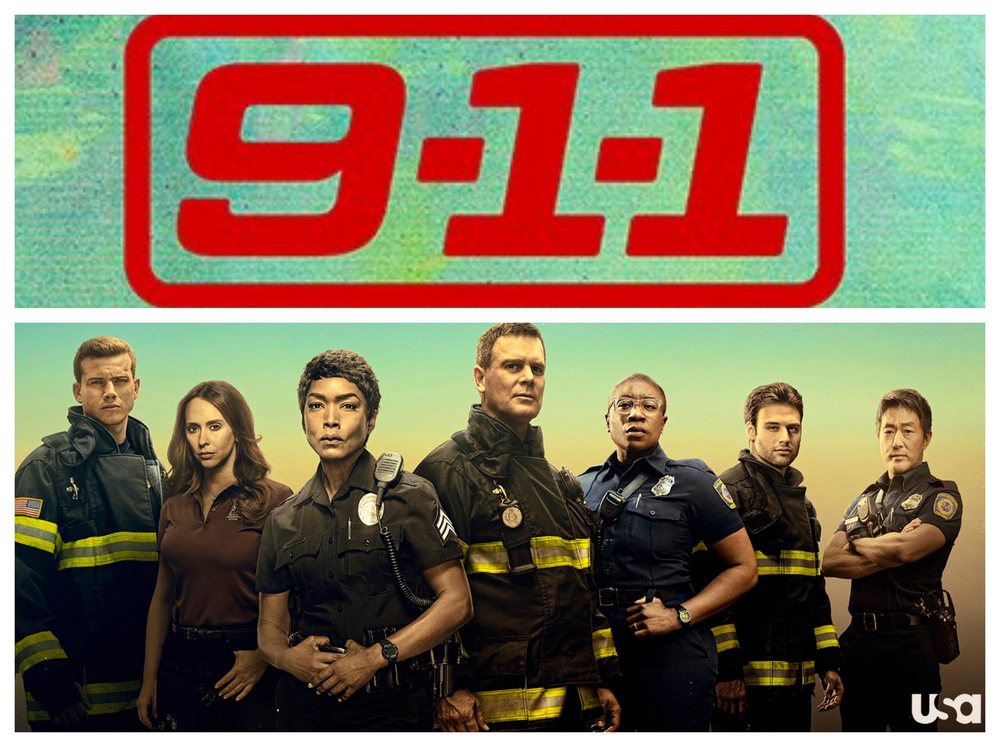

9-1-1
Zyah: This is my ultimate comfort show, even though it involves numerous traumatic events! I love all the characters and have probab;y watched this show 4 times w/ diff people! 4.5/5 stars
Olivia: 9-1-1 is a necessary corny tv show w/ a comedic twist to serious events. 4.5/5 stars
Isha: I thought it was interesting to watch as an EMT some of the procedures and reactions taht they showed were definitley not accurate, but it was still entertaining nonetheless! 3.5/5 stars
Julia: I thought 9-1-1 was extremely riveting. I was on the edge of my seat the entire time. The part where the guy almost blew up was crazy (tbh this happens like every other 9-1-1 ep lol so idek what ep she's talking about) I liked the drama but it was a little too stressfull for me. Overall it was a good watch though! 3.5/5 stars.
High School Musical the Musical the Series
Zyah: Another one of my comfort shows! I started it when I was 15/16 and I live for juicy cheesy drama and relationship conflict! I remember watching it live and being so invested in it. I've also probably seen the show like 3 times watching it with other people. I also legitimatley cried at the end it was sooo good! I love the music and the cast is so talented. I love the character Gina and her actress Sofia Wylie. Def a 4/5 stars!!!
Isha: I had no idea what was going on tbh there's so many side arcs and plot twists, but to be fair, I started watching it midway at random points so I'm probably not the best choice for a review, but... I LOVE LOVE LOVED the songs they were so catchy! 3/10 Stars
Azreen: I really liked the soundtrack. I also liked how the characters and the actors grew in both their vocals and acting skills. I don't like one character in particular, but everyone else is flawed but relatably so. It has its very cringey moments, but the really good moments balance it out. 4/5 stars.
Julia: This is a fun show! I really enjoyed all the songs! Also love Sofia Wylie and Olivia Rodrigo. 4/5 stars.